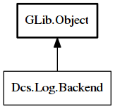

Backend
Object Hierarchy:

Description:
public interface Backend : Object
Interface for plugins that are to be used as a backend for logging data.
Content:
Methods:
- public abstract void open () throws Error
Opens a connection to the file/database/key-value store that's being
implemented by the backend plugin.
- public abstract void close () throws Error
Closes the connection to the file/database/key-value store that's
being implemented by the backend plugin.
Inherited Members:
All known members inherited from class GLib.Object
- @new
- newv
- new_valist
- get_type
- get_class
- @ref
- unref
- ref_sink
- weak_ref
- weak_unref
- add_weak_pointer
- remove_weak_pointer
- @get
- @set
- get_property
- set_property
- get_data
- set_data
- set_data_full
- steal_data
- get_qdata
- set_qdata
- set_qdata_full
- steal_qdata
- freeze_notify
- thaw_notify
- dispose
- constructed
- notify_property
- connect
- disconnect
- add_toggle_ref
- remove_toggle_ref
- bind_property
- notify
- ref_count